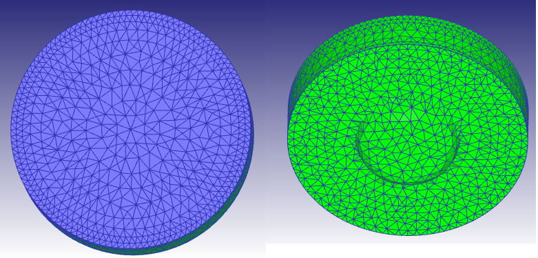
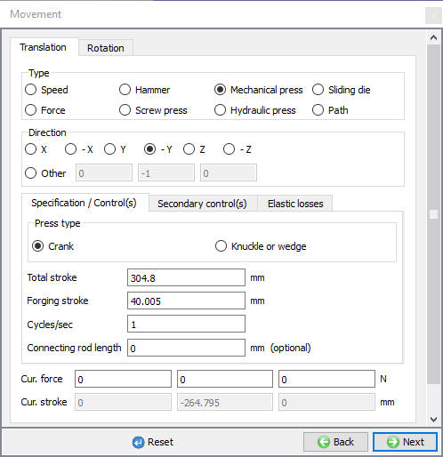
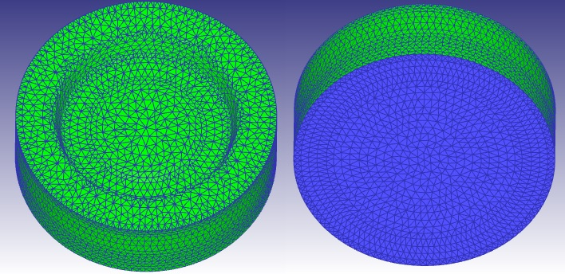
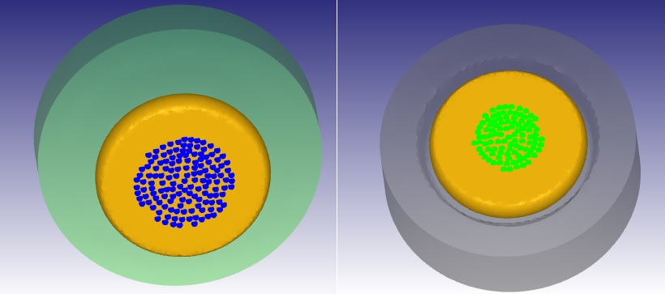
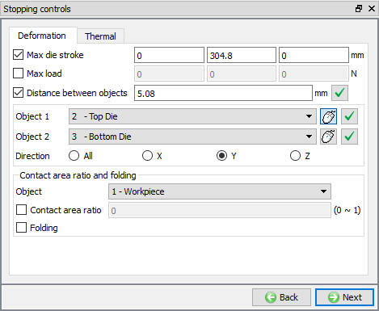

Start DEFORM and create a new project named Gear_m.
Add 3D Forming operation and click on  (Import database) in the File menu. Open the “Gear.DB” file. Select the first step of the third (Forge) operation and click
(Import database) in the File menu. Open the “Gear.DB” file. Select the first step of the third (Forge) operation and click  .
.
In this lab we show how to setup the Mechanical press controls for a non-isothermal simulation with heat transfer calculations for both the workpiece and dies. In Simulation controls by default Heat Transfer check box will be in turned on, if not turn on the Heat Transfer checkbox.
Click on the Workpiece Boundary condition branch and define Heat exchange with environment boundary condition for the entire object using (Select all) icon, if the system has not automatically assigned it.
Click on Top die branch in operation tree and set temperature to 148.889° C.
We'll mesh both tools in order to simulate the temperature of the die. Click on the Top die Mesh branch in the operation tree, set 20000 elements and click on  .
.
Click on  and click the
and click the  (Load material from library) button and select the Die_material category,
then AISI-H-13. Assign the loaded material by selecting it in material list.
(Load material from library) button and select the Die_material category,
then AISI-H-13. Assign the loaded material by selecting it in material list.
Click on  and define Heat exchange with environment boundary condition for entire object except top surface as shown in Fig. L6.1.
and define Heat exchange with environment boundary condition for entire object except top surface as shown in Fig. L6.1.

Top die Heat exchange with environment boundary condition surfaces
Click on  to change the movement controls for Top die. Select Mechanical press from the top row of radio buttons. Enter:
to change the movement controls for Top die. Select Mechanical press from the top row of radio buttons. Enter:
- Total stroke: 304.8 [this represents the total ram stroke from top dead center to bottom dead center]
- Forging stroke: 40.005 [this represents the top die stroke form the current position to bottom dead center]
- Cycles/sec: 1.0 [this represents a flywheel rotation of 60 RPM] (See Fig. L6.2.)

Mechanical press movement definition for top die
Similar to Top die Heat transfer definition define Bottom die initial Temperature to 148.889°C and Mesh of 50000 Elements. (See section 6.4 Define Heat transfer with Top die)
Click on  and select AISI-H-13 from material list to assign material. Click on
and select AISI-H-13 from material list to assign material. Click on  to define the Heat
exchange with environment boundary condition and select all surfaces except bottom surface as shown in Fig. L6.3.
to define the Heat
exchange with environment boundary condition and select all surfaces except bottom surface as shown in Fig. L6.3.

Bottom die Heat exchange with environment boundary condition surfaces
Click on Contact in operation tree to define inter-object relationship.
Click on  for any relation and add heat transfer coefficient of 11 N/s/mm/C. Click on
for any relation and add heat transfer coefficient of 11 N/s/mm/C. Click on  to add for other relationships. Click the
to add for other relationships. Click the  (Tolerance) button followed by the
(Tolerance) button followed by the  button (at bottom of
the inter-object window). You should see the contact nodes on the workpiece where contact has been generated. See Fig. L6.4. for how the Inter object window looks and contact generation displays in graphics window.
button (at bottom of
the inter-object window). You should see the contact nodes on the workpiece where contact has been generated. See Fig. L6.4. for how the Inter object window looks and contact generation displays in graphics window.

Top and bottom die contact with workpiece
Click on  to define stopping controls.
to define stopping controls.
Add a stopping criteria to stop the simulation when the stroke reaches -304.8 (Max Die Stroke) in Y direction field as shown in Fig. L6.5. and uncheck the Distance between objects stopping controls. Click on  to Step page.
to Step page.

Maximum primary die displacement stopping controls
Keep the simulation controls settings imported from DB and click on  to check and generate DB.
to check and generate DB.
Check and Generate database and click on the  Mode button (above the operation tree) to start the simulation.
Mode button (above the operation tree) to start the simulation.
Run simulation, after completing running click on  Mode button to review results.
Mode button to review results.
In MO postprocessor, go to the load-stroke  plot and plot the punch Velocity (Y speed) vs. Stroke.
plot and plot the punch Velocity (Y speed) vs. Stroke.
Plot the load vs. time for primary die.
Optional exercise – time permitting
- Compare the maximum load with the simulation using a constant speed approximation.
- Compare the process time with the simulation using a constant speed approximation.
- Rerun the Gear problem with meshed tooling and by turning on Heat transfer mode check box option. Use the same inputs for the die mesh, material and temperature. Compare the temperature on the center surface of the bottom die between a constant speed approximation and this case using a mechanical press model.
- Export graph data and import into Excel or another program. You can right click on any graph and select Export graph data to create a text file output.